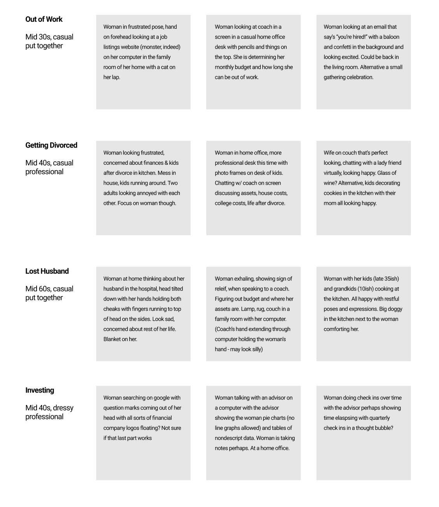

Willow
We believe that by enhancing Bumble with an additional set of features we will enable daters to more confidently move from messaging to dating. We will know this to be true when daters that use the features meet in person more often than most. View a sample video of the final hi-fidelity prototype seen below.
Task
Create a platform tailored to women's financial needs matching them with trusted financial coaches.
Timeline
2 months, 3 weeks of user interviews and usability testing. 1 week synthesising data, and 4 weeks spent on designing, iterating, and prototyping the consumer platform end-to-end experience.
My Role
Sole UX/UI designer tasked with creating low-high fidelity wireframes prototypes.
Research Process


- 
-
At Willow developing trust in the fragmented industry of financial coaching was top priority. Originally the website and concept of UI for Willow heavily focused on Illustrations. After interviewing users we realized women did not connect with the illustrations. Almost all women we interviewed cited that they had a negative association to financial advisors and coaches due to a general feeling of a lack of respect, empathy and willingness to educate. Women would often speak about meeting with advisors who were dismissive towards them and left feeling overlooked, and underestimated.
-
After collecting the data and user insights I suggested using a program called Miro to be able to simultaneously work on an affinity map to isolate common pain points and patterns. I found that using this program you can save your user insights easier and collaborate without interference from falling stickies or schedule constraints.
-
Personas were created in order to capture a range of experiences women would be experiencing that would drive them to seeking financial guidance. This wireframe was our attempt to identify these key life journeys and give users a roadmap of what this experience would provide with their specific need.
Design Process


-
After reviewing the research, our team agreed on a pain point that was seen across the board with the women we interviewed. We needed to showcase a guide for women demonstrating a step-by-step guide on how Willow can help women in their situation. This would be shown on the company website where they would identify their journey, see the process, and feel comfortable about moving forward.
-
We created a site map and user flows from research and sketches. These step-by-step guide for the user shows each step in their user experience journey.
-
This is a crucial step to developing experiences that make sense to both fit users needs and business needs. It's important in any team to break down content ideas to see does each part of this design have a purpose and can it be backed with data.
Delivery Process


-
Ultimately our team created a design of three step-by-step examples of life journeys and how Willow could help them with their financial goals. This accomplished two goals we had for this feature: 1. Create a visual guide for the process and 2. Provide depth and value to the user that connects to their current life journey need.